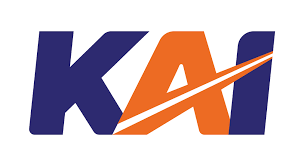

As a company that manages railways in Indonesia, PT Kereta Api Indonesia (Persero) has operated many passenger trains, both main trains (commercial and non-commercial), as well as local trains in Java and Sumatra, consisting of:
Each train set is equipped with a dining car that serves as Restoration. Restoration serves food and drinks during your journey. There are typical railway menus that customers can enjoy. The Restoration crew consists of : Chef, Prama and Prami who are ready to serve our customers on the journey.
The train crew is the railway officer in charge during the journey. The train crew consists of: Driver, Assistant Driver, Conductor, Train Technician and AC Runner. They are professionally trained to serve Railway customers.
An On Train Customer Service Representative as our Customer Service Representative who accompanies passengers on their train journey. Ready to receive criticism, suggestions, complaints to fulfil customer needs for excellent service.
On Train Cleaning (OTC) officers are in charge of maintaining the cleanliness of the train during the journey. There are two OTC officers in each Train who are ready to serve our customers.